Half the fleet generates 80% of the exceptions.
A four-layer statistical analysis of 1,603 operational exceptions across 100 stores finds that risk is structurally concentrated, driven by store format, and actionable through targeted intervention. No single person or vendor is to blame. The biggest financial lever costs $3,750 and returns $46,500.
Operational risk in this fleet is structurally concentrated, not randomly distributed. Forty-seven stores account for 80% of exceptions. Store format (drive-thru and kiosk) is the dominant predictor. No field rep can be statistically blamed. The most effective interventions are targeted: a 47-store watchlist, format-specific policies, a North region assortment audit, and 15 inter-store SKU transfers with 12.4× ROI.
Where is risk concentrated?
Exceptions do not spread evenly across the fleet. The average store has 16 exceptions, but the median is 13 and the maximum is 55. Sixteen stores have zero exceptions at all. Including those zero-exception stores in the analysis is critical: excluding them would make the distribution look more even than it actually is.
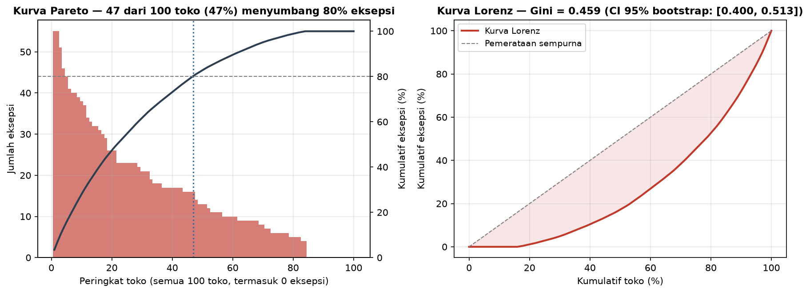
The numbers
A Gini of 0.459 is moderate-to-high inequality. For context, this is comparable to the income inequality of a mid-tier developing nation. The confidence interval [0.400, 0.513] rules out both perfect equality (0) and maximal concentration (1).
The top 5 stores are S-011 (55), S-037 (55), S-058 (51), S-092 (46), and S-018 (44). Three of these five are drive-thru format stores in the North region. This is not a coincidence; it foreshadows the segmentation findings below.
Create a "Focus 47" watchlist. These stores get weekly diagnostic reviews. The remaining 53 get monthly reviews. Also study the 16 zero-exception stores as internal best-practice benchmarks.
What drives the exceptions?
If Layer 1 told us where risk concentrates, Layer 2 asks why. Two store attributes were tested: format (drive-thru, kiosk, standard, flagship) and region (North, West, East, South). One of these matters a lot. The other does not.
Store format is the dominant predictor
Drive-thru and kiosk stores generate roughly 2.5 times more exceptions than standard stores, and nearly 5 times more than flagship stores. The statistical test confirms this is not random variation: Kruskal-Wallis H=29.36, p=1.9×10⁻⁶, with a large effect size (ε²=0.275).
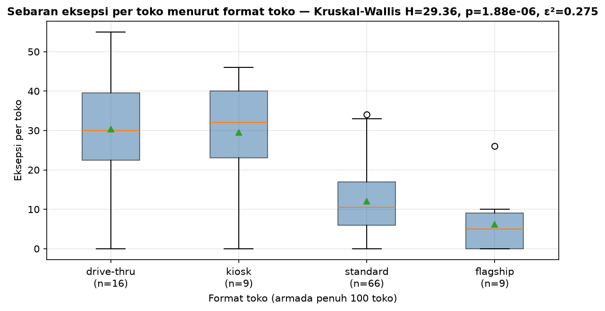
| Format | Stores | Mean exceptions | Median | Std dev |
|---|---|---|---|---|
| Drive-thru | 16 | 30.4 | 30.0 | 16.7 |
| Kiosk | 9 | 29.6 | 32.0 | 15.0 |
| Standard | 66 | 12.0 | 10.5 | 8.5 |
| Flagship | 9 | 6.2 | 5.0 | 8.4 |
Post-hoc pairwise testing (Mann-Whitney U with Holm correction) reveals that drive-thru and kiosk are statistically identical to each other (p=0.977). They should be treated as a single risk class. Four of six format pairs are significant after correction, with large effect sizes (Cohen's d 1.68 to 1.92).
| Pair | p (Holm-corrected) | Significant | Rank-biserial | Cohen's d |
|---|---|---|---|---|
| Drive-thru vs Standard | 3.5e-5 | Yes | 0.67 | 1.74 |
| Kiosk vs Standard | 7.4e-4 | Yes | 0.70 | 1.85 |
| Drive-thru vs Flagship | 2.5e-3 | Yes | 0.74 | 1.68 |
| Kiosk vs Flagship | 7.4e-3 | Yes | 0.75 | 1.92 |
| Standard vs Flagship | 0.032 | No | 0.44 | 0.68 |
| Drive-thru vs Kiosk | 0.977 | No | -0.01 | 0.05 |
Region does not predict exception volume
Total exception volume is statistically identical across all four regions (Kruskal-Wallis p=0.675, effect size essentially zero). However, this test was underpowered for a medium effect (power=0.52), so the absence of significance should be read as "inconclusive," not as proof that regions are the same.
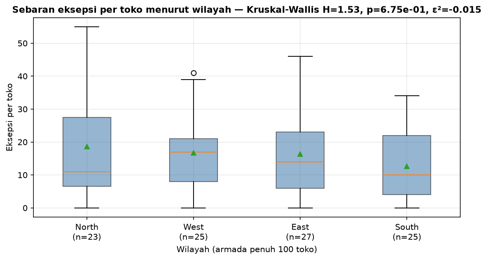
Adjust allocation quantity and audit frequency for the 25 drive-thru and kiosk stores. Consider format-specific SLA thresholds that account for their higher baseline exception rate. Do not launch a "region problem" investigation based on total volume alone.
Where do specific failure modes come from?
Layer 2 established that format drives volume. Layer 3 asks a sharper question: when a specific type of exception happens, does it cluster in a particular region, field rep, or upstream partner?
Regional hotspots: North has an assortment problem
While total exception volume does not differ by region, specific exception types do cluster geographically. After testing all 32 region-by-type combinations with exact binomial tests and correcting for false positives (BH-FDR across the full family), six cells are genuinely significant.
The North region has a higher share than expected of overstock (1.52× baseline, p-FDR=5.7×10⁻⁵) and low sell-through (1.33× baseline, p-FDR=7.1×10⁻⁵). The South mirrors this with a lower share than expected on both. This points to a local assortment planning issue, not a field execution failure.
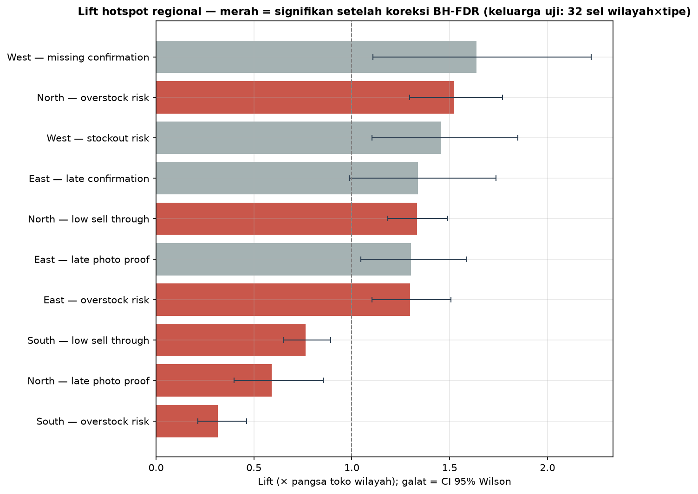
Notably, four of six hotspots flagged by the original insight engine do not survive FDR correction. This means the engine was flagging patterns that look like signal but are actually consistent with random variation across 32 tests.
Field reps: nobody can be statistically blamed
This is the finding that changes the conversation. The original analysis flagged field rep Nora Smith as significantly over-indexed on compliance failures (p-FDR=0.0005, lift=1.93×). That result was wrong.
The original test used a Poisson model that assumed each exception was an independent event. In reality, exceptions cluster at the store level (variance is 3.6 times the mean). When a store-level permutation test (20,000 iterations) replaces the Poisson test, no field rep is significant. Nora Smith's corrected p-FDR is 0.19.
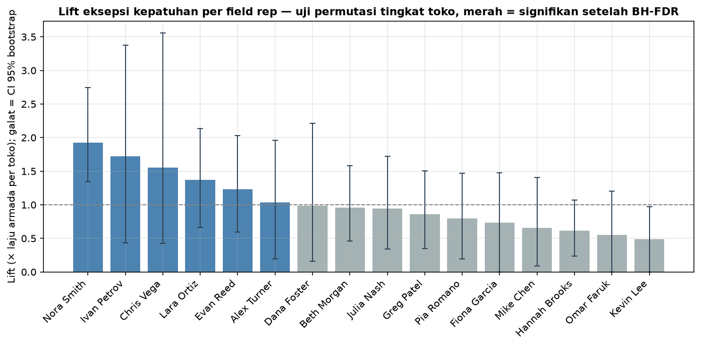
Additionally, 46 compliance exceptions at 13 stores with no assigned rep were silently dropped from the original analysis. These need an owner.
Quantity mismatch: systemic, not vendor-specific
Quantity mismatches (148 total) are distributed uniformly across distribution centers (chi-square p=0.782, Cramér's V=0.041) and carriers (p=0.817, V=0.037). No DC or carrier is over- or under-represented. This is a systemic reconciliation problem, not a vendor management problem.
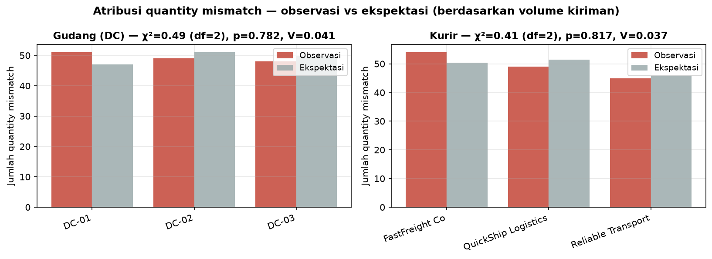
Audit the North region's assortment and allocation planning process. Assign field reps to the 13 uncovered stores. Do not review individual rep territories; the data does not support it. Fix the reconciliation layer for quantity mismatches instead of pressuring vendors.
What should we do first?
Three opportunities emerged from the data: inter-store transfers (the highest-ROI action in this analysis), SLA breach prevention, and a sensitivity check on the priority scoring system.
Rebalancing: 15 SKUs, 12.4× ROI
Fifteen SKUs across three campaigns have simultaneous stockouts in some stores and overstock in others, within the same campaign. These are transfer candidates. The cost of executing 15 transfers is $3,750. The recovered value is $46,500. That is a 12.4× return.
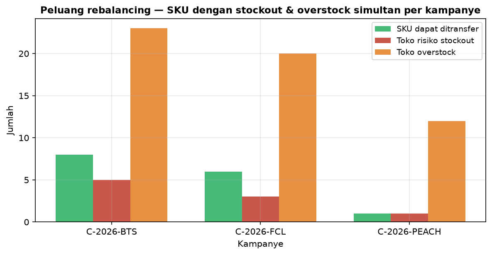
SLA breaches: concentrated in process exceptions
The overall SLA breach rate is 10.0% (160 of 1,603 exceptions, Wilson 95% CI [8.6%, 11.5%]). But this average hides extreme variation by exception type. Unresolved SLA breaches have a 100% breach rate by definition. Quantity mismatches breach 35.1% of the time. Low sell-through, overstock, and stockout exceptions never breach SLA because their SLA windows are 7 days.
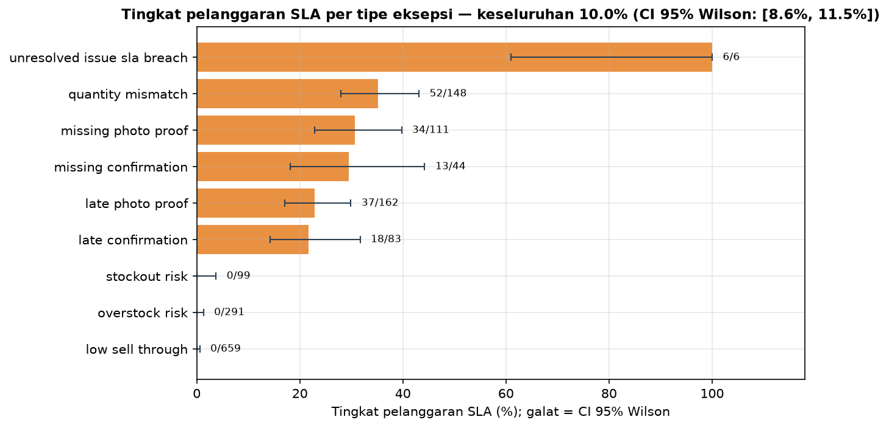
Aging: 92.8% fresh, but 7.2% needs attention
The vast majority of exceptions (92.8%) are fresh (0-5 days old). 3.9% are aging (6-15 days), and 3.3% are overdue (16-30 days). Zero exceptions are chronic (30+ days). The overdue bucket is the most urgent: every exception in it has breached SLA.
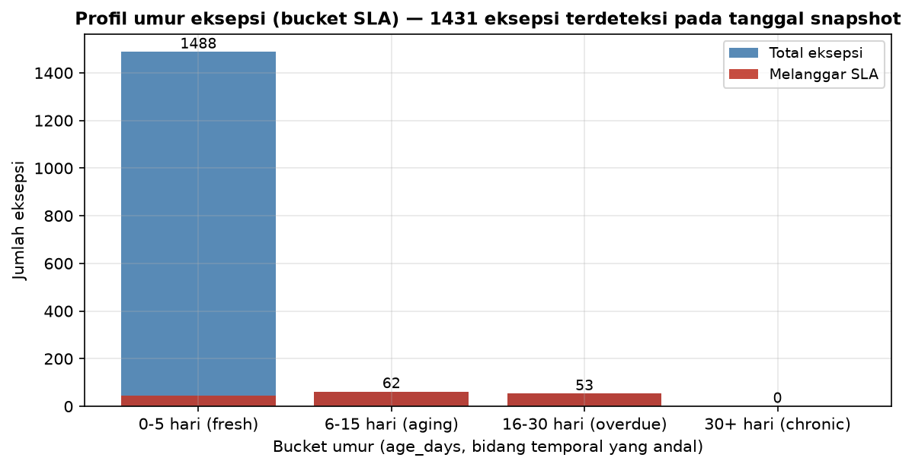
Financial exposure: $1.0M
The total operational exposure is $1,004,400, driven by stockout revenue risk ($243,600), SLA breach penalties ($240,000), and critical exception expediting ($520,800). These are illustrative figures based on assumed parameters ($4,200 per stockout store-day, $1,500 per SLA breach, $800 per critical exception). The parameters are configurable.
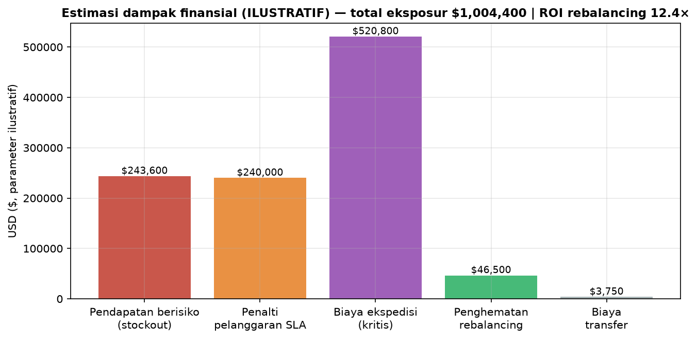
Sensitivity: the priority queue is stable
The insight engine ranks exceptions by an impact score. How fragile is that ranking to the choice of weights? Three scenarios were tested (original, conservative, aggressive) and compared using Spearman's rho. The minimum correlation is 0.960 (p<10⁻⁷). The ranking is robust.
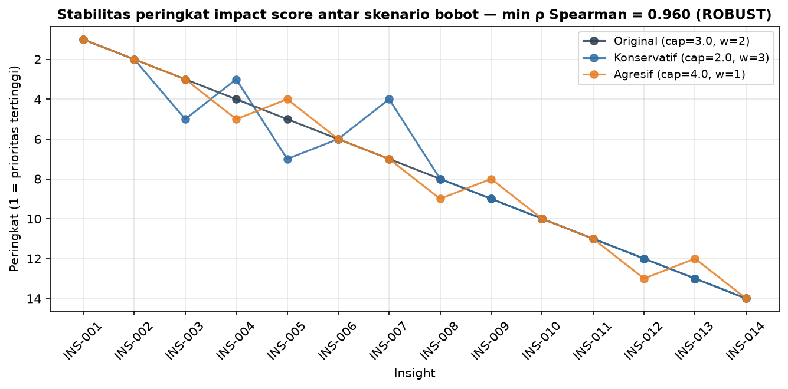
Execute the 15 inter-store transfers immediately. This is the highest-ROI action in the analysis and costs almost nothing. Prioritize the 53 overdue exceptions for SLA recovery. Trust the impact score ranking; it does not change under reasonable weight adjustments.
Prioritized action framework
Six actions, ranked by impact. Each is tied to a specific analytical layer and evidence base.
Create a "Focus 47" watchlist
Weekly diagnostic reviews for the 47 stores producing 80% of exceptions.
Execute 15 inter-store SKU transfers
Stockout and overstock matches across 3 campaigns. ROI 12.4× ($3,750 cost, $46,500 recovered).
Audit North region assortment and allocation
North over-indexes on overstock (1.52×) and low sell-through (1.33×). Both survive FDR correction.
Format-specific allocation and SLA policy
Adjust audit frequency and SLA thresholds for 25 drive-thru and kiosk stores. Large effect (d=1.7-1.9).
Audit data reconciliation for quantity mismatches
148 mismatches distributed uniformly across 3 DCs and 3 carriers. Fix the reconciliation layer.
Assign field reps to 13 uncovered stores
46 compliance exceptions currently have no owner. Assign coverage immediately.
Explicitly not recommended
- Per-rep territory review. No rep is statistically significant after proper testing. The original "flag Nora Smith" recommendation is withdrawn.
- "Problem region" intervention based on total volume. Region is not a significant predictor of exception volume (p=0.675). The test was underpowered, but there is no evidence to support region-wide intervention.